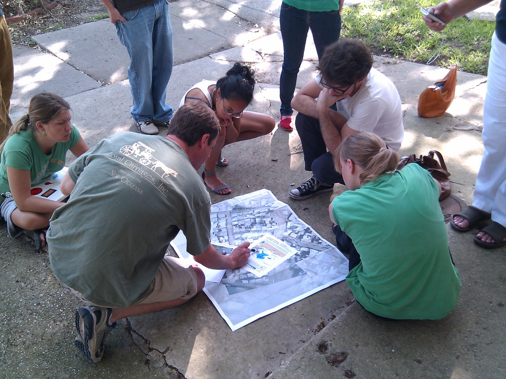

In late April 2010, the Deepwater Horizon oil rig exploded and sank, initiating what may be one of the worst environmental disasters in US history. As the spill grew in size, the author contacted Stewart Long of GonzoEarth.org and Oliver Yeh of 1337arts.com.
| r0.5

|
With the cooperation and extensive support of the LABB and other interested New Orleans residents, the team began leading almost daily trips to use balloons and kites to map coastal areas. While not attempting to produce imagery of the entire at-risk coastline, which stretches several thousand miles from Louisiana to Florida, the mappers focused on acquiring high resolution imagery of specific sites, with the goal of producing 'before and after' maps. The trips relied on the availability of free transport to affected areas, but in the initial days of the project this was not a problem, as fishermen and charter companies began calling in to offer their services for free. Increasingly large areas of the Gulf of Mexico were being closed to fishing, and with their livelihoods at risk, many in the fishing industry were eager to participate in the documentation of the spill.